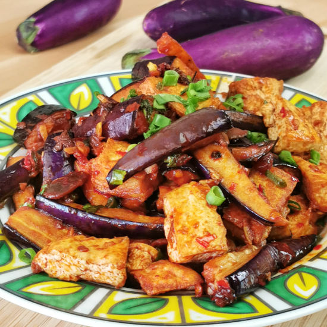

Eggplant and Tofu Dish
Home Page

Szechuan-style eggplant and tofu dish
This recipe is based on the popular braised eggplant with Chinese garlic sauce (鱼香茄子) with some variations. It is a vegetarian dish, but you are free to add some minced meat to it to enhance the flavor.
The Ingredients
Main Ingredients (a)
- 400g of eggplants
- 300g of firm tofu
Other ingredients (b)
- 1 tbsp of chopped spring onion
- 1 tbsp of chopped garlic
- 1 tbsp of chopped ginger
- 2 dried chillies(cut and remove the seeds)
- Toasted white sesame and chili flakes (garnish, optional)
- Vegetable oil for frying
Seasonings (c)
- 3 tbsp chili bean paste
- 1/2 tsp of ground Szechuan peppercorn (optional)
- 1.5 tbsp of Chinkiang vinegar
- 1.5 tbsp of oyster sauce
- 1/2 tsp of sugar
- 1 tbsp of Shaoxing wine
- 1/2 tsp Sesame oil
Step-by-step instructions
- Cut the eggplant into large sticks, about 2 inches in length.
- Add salt and vinegar to the eggplant pieces and mix well.
- After ten minutes, place the eggplant pieces single layer on paper towels to remove the excess moisture.
- Cut the eggplant into large strips, then seep-fried for two minutes over medium heat. (Please refer to the text if you want to steam the eggplant).
- Cut the tofu into one-inch pieces, then deep-fry the tofu in oil at medium-high heat until golden brown. Set aside. (Please refer to the text if you want to pan-fry the tofu).
- Combine the seasonings (c) in a small bowl.
- Heat some oil in the wok. Stir-fry the chopped garlic, ginger, dried chilies, and white part of the spring onion until aromatic.
- Add the sauce and wait until it returns to a boil.
- Return the eggplant cubes and tofu to the wok.
- Stir-fry over medium heat for half a minute.
- Sprinkle some spring onions to serve.